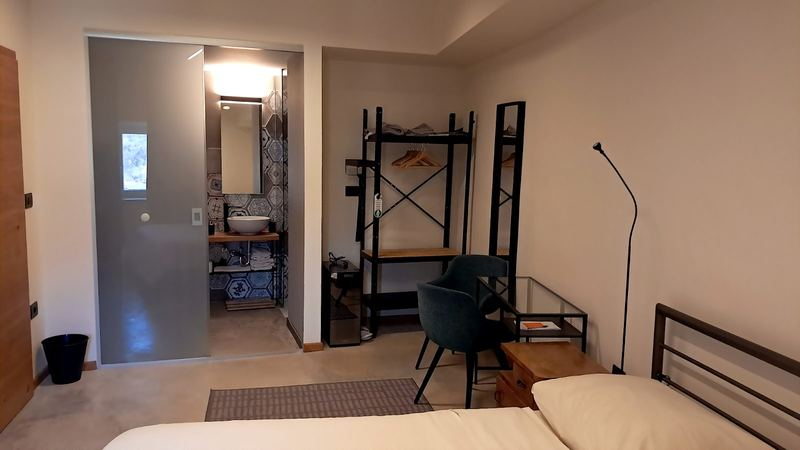
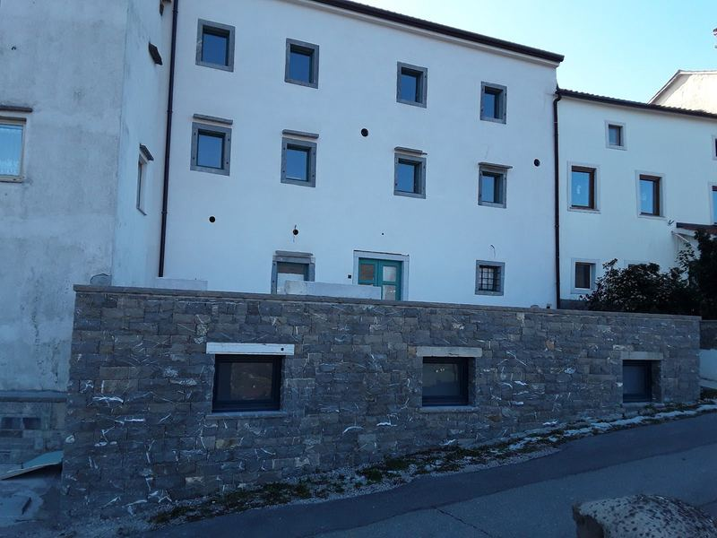
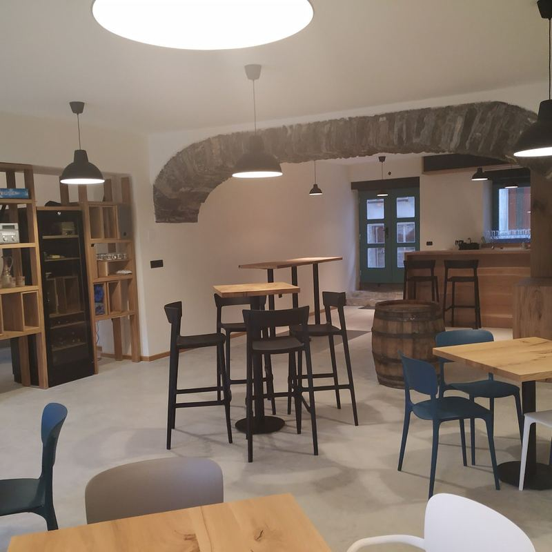

B&W Križ se nahaja znotraj obzidja Vipavskega Križa, enega najbolje ohranjenih srednjeveških naselij v Sloveniji. V osrčju Vipavske doline ponuja miren oddih v edinstvenem zgodovinskem okolju.
Naša skrbno obnovljena zgodovinska hiša združuje značaj preteklosti s sodobno arhitekturo in udobjem. Sedem sodobno urejenih sob, v katerih se prepletajo beton, črna kovina in les, ponuja prijetno okolje za sproščeno bivanje.
Začnite dan z zajtrkom, pripravljenim predvsem iz lokalnih sestavin, privoščite si miren trenutek ob kaminu ali občudujte razgled na Vipavsko dolino z naše terase.
Le nekaj korakov od našega praga vas ozke kamnite ulice vabijo k raziskovanju Vipavskega Križa, okoliška pokrajina pa k odkrivanju lokalne kulinarike, vina, narave in bogate kulturne dediščine.
B&W Križ je prostor, kjer se preteklost in sedanjost srečujeta na povsem naraven način. Vabimo vas, da si pri nas vzamete čas zase in doživite Vipavsko dolino v svojem ritmu.
Sedem sob v prenovljeni zgodovinski hiši združuje sodobno arhitekturno zasnovo in udobje bivanja. Kombinacija betona, črne kovine in lesa daje prostorom prepoznaven sodoben značaj, ki se dopolnjuje z zgodovinskim značajem hiše.
B&W Križ ponuja sedem sob z lastno kopalnico. Sobe se razlikujejo po velikosti in razgledu, vse pa zagotavljajo zasebnost in udobje za prijetno bivanje.

Na voljo so:
3 dvoposteljne sobe s posteljo širine 160 cm (1 z razgledom, dve brez),
1 štiriposteljna soba s posteljo širine 160 cm in pogradom (z razgledom),
2 dvoposteljni sobi s posteljo širine 140 cm (z razgledom),
1 enoposteljna soba s posteljo širine 140 cm (z razgledom).
Gostom je na voljo tudi prostoren skupni prostor za druženje z neposrednim izhodom na teraso.
Povpraševanje prek naše strani je brez predplačila.
Zajtrk
Dan pri nas začnemo z zajtrkom, pripravljenim predvsem iz lokalnih sestavin. Ob lepem vremenu lahko zajtrkujete na terasi z razgledom na Vipavsko dolino, sicer pa v skupnem prostoru.
Vipavski Križ je mnogo več kot slikovita srednjeveška vas. Njegova zgodovina sega v predrimski čas, v pisnih virih pa je prvič omenjen leta 1252 kot Villa Crucis. Ob koncu 15. stoletja je bil utrjen z obzidjem, leta 1507 je pridobil tržne pravice, leta 1532 pa postal mesto.
Danes na njegovo bogato preteklost spominjajo ozke kamnite ulice, ostanki gradu, mestno obzidje in kapucinski samostan, v katerem je deloval znameniti pridigar Janez Svetokriški. Sprehod po Vipavskem Križu je tako tudi sprehod skozi stoletja zgodovine.
Za obzidjem se odpira Vipavska dolina s svojo kulinariko, vinogradniško tradicijo, naravo in številnimi možnostmi za raziskovanje.
Več o zgodovini in znamenitostih Vipavskega Križa – povezavo na uradno stran dodamo, ko potrdimo naslov.

Lokacija – izhodišče za raziskovanje
B&W Križ leži v Vipavski dolini, na stičišču različnih pokrajin in kulturnih vplivov. Od tod lahko raziskujete vinorodne griče, kraške vasi, naravne znamenitosti in bogato dediščino zahodne Slovenije.
Naša lokacija je primerno izhodišče tudi za daljše enodnevne izlete. Ljubljana, Bled, dolina Soče, slovenska obala in bližnja Italija ponujajo številne možnosti za odkrivanje, medtem ko vas ob koncu dneva v Vipavskem Križu pričaka mirnejši ritem bivanja.
Pri prenovi B&W Križ je arhitekt Vladimir Slamič izhajal iz zgodovine stavbe in njenega mesta v srednjeveškem obzidju. Nekdanjemu gospodarskemu objektu je želel ohraniti prvinski značaj in preprostost, značilno za nekdanji način življenja, ter ju poudariti s premišljeno uporabo sodobnih arhitekturnih elementov.
Prenova je zajela tudi notranjo opremo. Poseben arhitekturni element je odprto osrednje stopnišče, ki povezuje skupni prostor s sobami v nadstropju. Njegova nova umestitev je obenem omogočila lepši pogled na Čaven in Goro.
Arhitekturna zasnova in notranja oprema: Vladimir Slamič, arhitekt.

Vino kot del kulture
Ime B&W Križ je nastalo iz povezave med prenočevanjem in vinom — bed & wine. Danes vino razumemo predvsem kot del kulturne krajine Vipavske doline: kot rezultat znanja, dela, tradicije in srečevanja ljudi.
Verjamemo, da stvari bolj spoštujemo, ko jih bolje poznamo. Zato goste z veseljem usmerimo k lokalnim vinarjem, kjer lahko spoznajo njihove zgodbe, vinograde in vina. Vino je del identitete kraja, ni pa pogoj za prijetno bivanje pri nas.
Kaj nam je pomembno
Verjamemo, da dobro gostoljubje ne potrebuje velikih besed. Pomembni so prijazen sprejem, spoštovanje zasebnosti in pozornost do drobnih stvari, ki vplivajo na počutje gosta.
Radi imamo preprostost in pristnost. Pri prenovi hiše smo želeli ohraniti njen zgodovinski značaj in ga povezati s sodobnim načinom bivanja. Pri izbiri živil dajemo prednost lokalnim ponudnikom, pri vsakdanjem delu pa se trudimo zmanjševati količino odpadkov in nepotrebne embalaže.
Želimo si, da bi se gostje pri nas počutili sproščeno in Vipavski Križ spoznali takšen, kakršen je.
Kdo smo
B&W Križ je nastal iz povezanosti z Vipavskim Križem, njegovo zgodovino in vinogradniško tradicijo Vipavske doline.
Tjaša se poklicno ukvarja s kakovostjo, ob tem pa jo že vrsto let zanimajo vino, lokalna dediščina in razvojni projekti. Te izkušnje in zanimanja se prepletajo tudi pri oblikovanju ponudbe B&W Križ.
Borja se kot umetnik posveča zgodovinskemu poustvarjanju, zlasti oživljanju preteklosti skozi kostume, predmete in prikaze nekdanjega življenja. Njegovo ustvarjanje je še ena vez med našo družino in zgodovinskim okoljem Vipavskega Križa.
B&W Križ tako ni le nastanitev v zgodovinski hiši, temveč tudi prostor, v katerem se srečujejo različna zanimanja in odnos do kraja, v katerem živimo.
Kontakt in rezervacije
Praktične informacije in rezervacije
Prijava
praviloma 17.00–21.00 oziroma po dogovoru
Odjava
praviloma do 10.00 oziroma po dogovoru
Parkiranje
V naselju je parkiranje omejeno; goste pred prihodom usmerimo na ustrezno parkirišče. Podrobna navodila prejmete ob rezervaciji oziroma pred prihodom.
Prehrana
Večerij ne pripravljamo. Z veseljem priporočimo možnosti prehrane v okolici.